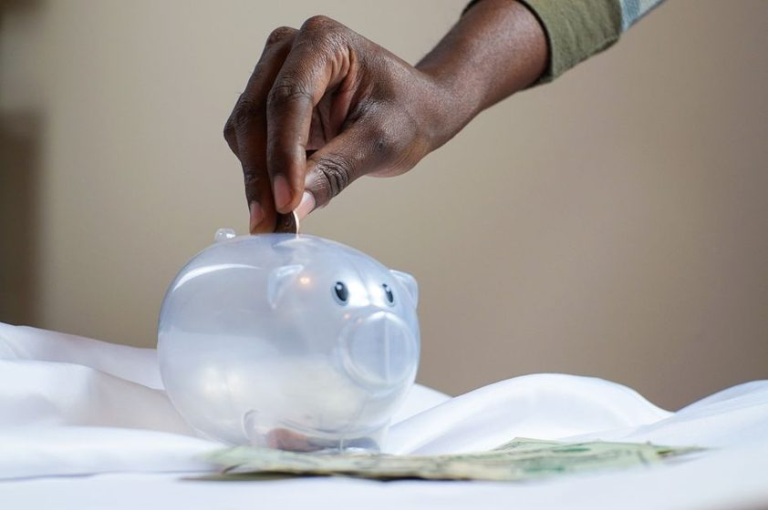

Reserva de emergência leve: comece com o que você tem hoje
O passo a passo para criar seu colchão de segurança sem apertar demais o orçamento.

Se a sua reserva de emergência ainda é uma linha em branco na lista de metas, respire: você não está atrasado. A verdade é que quase ninguém acorda um dia com seis meses de despesas guardados. Reserva se constrói em migalhas — um pouco por vez, do jeito que cabe no seu mês. Este guia é sobre começar com o que você tem hoje, mesmo que hoje sejam vinte reais.
A ideia aqui não é te fazer sentir culpa por ainda não ter começado. É te mostrar um caminho leve, realista e sem promessa de milagre. Vamos entender o que é essa reserva, quanto ela precisa ter, onde deixá-la e como fazer o dinheiro crescer sem que você precise "apertar o cinto" a ponto de sufocar.
O que é uma reserva de emergência (e por que ela existe)
Reserva de emergência é um dinheiro guardado com um único propósito: cobrir imprevistos sem que você precise recorrer a dívida cara. É o pneu que fura, o dente que quebra, a geladeira que para de funcionar, a renda que some por um tempo. Sem reserva, esses momentos empurram muita gente pro cheque especial ou pro rotativo do cartão — justamente os créditos mais caros que existem.
Pense nela como um amortecedor. Ela não te deixa mais rico; ela te deixa mais tranquilo. Enquanto o dinheiro dos investimentos trabalha pra crescer, o dinheiro da reserva trabalha pra estar disponível quando a vida der uma freada brusca.
Reserva de emergência não é sobre render mais. É sobre não precisar tomar decisões desesperadas num dia ruim.
Por isso, ela não se mistura com a viagem dos sonhos, com a troca de celular nem com o "vou usar só um pouquinho". Emergência é aquilo que é, ao mesmo tempo, urgente, necessário e inesperado. Se falhar em uma dessas três, provavelmente não é emergência — é desejo ou é uma conta que já dava pra prever.
Quanto guardar: encontrando o seu tamanho ideal
A régua mais usada fala em três a seis meses de despesas essenciais. Repare: despesas essenciais, não o seu salário inteiro. O que interessa é quanto você gasta para viver com o básico funcionando — moradia, comida, transporte, contas de casa, remédios. Aquele delivery de sexta e a assinatura que você esquece de cancelar não entram na conta da emergência.
O tamanho certo, porém, depende muito da sua realidade. Quem tem renda fixa e estável (um emprego CLT, por exemplo) costuma dormir bem com um colchão menor. Já quem é autônomo, freelancer ou tem renda que varia de mês pra mês precisa de mais folga — porque a "emergência" mais comum, pra esse grupo, é simplesmente um mês mais fraco.
| Seu perfil | Faixa sugerida | Por quê |
|---|---|---|
| Renda estável, sem dependentes | 3 a 4 meses | Menor risco de queda brusca de renda |
| Renda estável, com dependentes | 4 a 6 meses | Mais bocas, mais imprevistos possíveis |
| Autônomo / freelancer | 6 a 9 meses | Renda variável exige mais margem |
| Renda única na casa | 6 a 12 meses | Sem uma segunda renda de apoio |
Esses números são faixas educativas, não regras de ouro. Se seis meses parecem impossíveis agora, tudo bem: comece mirando um mês. Ter um mês de despesas guardado já muda completamente a sua relação com o dinheiro. Depois você amplia. O primeiro objetivo não é a meta cheia — é criar o hábito.
Comece pequeno, mas comece
Guardar R$ 30 por semana durante um ano vira mais de R$ 1.500 — sem contar rendimento. O valor inicial importa menos do que a constância. O primeiro depósito é sempre o mais difícil e o mais importante.
Onde deixar a reserva: liquidez acima de tudo
Aqui mora o erro mais comum: guardar a reserva num lugar que rende bem mas demora pra sacar, ou que pode perder valor bem na hora que você precisa. Reserva de emergência tem duas exigências inegociáveis: liquidez (poder resgatar rápido, de preferência no mesmo dia) e baixo risco (o valor não pode balançar).
Se você ainda não tem clareza sobre esses conceitos, vale dar uma passada no nosso glossário — em especial nos verbetes liquidez, aporte e CDB. Entender essas três palavras já resolve metade das dúvidas.
O ponto central: a reserva não é o lugar pra buscar rentabilidade. Ela precisa estar ali, quietinha, pronta pra ser usada. Deixá-la parada na conta corrente faz a inflação corroer o valor aos poucos; deixá-la em algo volátil faz você correr o risco de sacar no pior momento. O equilíbrio está em aplicações de baixo risco e resgate rápido. Não vamos indicar um produto específico — cada pessoa tem um contexto — mas o critério para escolher é sempre o mesmo: consigo pegar esse dinheiro hoje, sem susto no valor? Se a resposta for sim, serve.
Reserva não é investimento de longo prazo
Se você travar o dinheiro por dois anos pra render um pouco mais, ele deixa de ser reserva. A perda de acesso custa mais caro que o rendimento extra na hora do aperto.
Como construir aos poucos, sem sufocar o orçamento
A reserva cresce melhor quando você não precisa pensar nela todo mês. O segredo é a automação: transforme o "vou guardar o que sobrar" em "já separei antes de gastar". Quem espera sobrar quase nunca vê sobrar.
- Pague-se primeiro. Assim que o dinheiro entra, separe uma fatia — mesmo que pequena — antes de qualquer boleto. Uma transferência automática programada para o dia seguinte ao pagamento faz esse trabalho sozinha.
- Escolha um percentual, não um valor heróico. Guardar 5% de tudo que entra é sustentável. Prometer R$ 500 num mês que não comporta só gera frustração e desistência.
- Use os "dinheiros extras". Restituição de imposto, 13º, um freela avulso, aquele reembolso inesperado — direcione uma parte direto pra reserva antes que ele evapore.
- Arredonde a favor da reserva. Cada compra "sobrou troco" pode virar depósito. Parece pouco, mas o acúmulo silencioso funciona.
Para saber quanto cabe guardar sem se apertar, o ponto de partida é conhecer o próprio orçamento. Se você ainda não organizou as contas do mês, vale começar por aí — nosso guia de orçamento sem culpa mostra como adaptar o método 50-30-20 à realidade brasileira e enxergar de onde pode sair a fatia da reserva.
Deixe a reserva no piloto automático
No app Bússola Leve você cria uma meta de reserva, define um aporte semanal e acompanha a barrinha encher sem planilha nenhuma.
Conhecer o Bússola LeveQuando usar (e quando não usar) a reserva
De nada adianta construir o colchão e sacar dele por qualquer coisa. A reserva existe para os "não posso adiar isto": conserto essencial, despesa médica, perda de renda, uma viagem urgente de família. Nesses casos, usar é exatamente o que ela deveria fazer — e não há vergonha nenhuma em recorrer a ela. Foi pra isso que existe.
Por outro lado, ela não é para: aproveitar uma promoção, dar entrada num sonho de consumo, cobrir um gasto que você já sabia que viria (IPVA, matrícula, seguro anual). Essas são despesas planejáveis — merecem uma "caixinha" própria, separada da emergência.
A pergunta de ouro antes de sacar: "isso é uma emergência ou é uma pressa?" Se der pra esperar o próximo pagamento, provavelmente é pressa.
E quando você precisar usar, não se culpe — reponha. Trate a recomposição da reserva como a próxima meta, com a mesma calma com que a construiu. Usar e repor faz parte do ciclo saudável; o problema é usar e esquecer.
Um plano leve para os próximos 90 dias
Se você quer sair da teoria hoje, aqui vai um roteiro sem pressão:
- Semana 1: some suas despesas essenciais do mês. Esse é o seu "1 mês de reserva".
- Semana 2: abra ou escolha um lugar de baixo risco e alta liquidez para a reserva ficar separada da conta do dia a dia.
- Semana 3: defina um aporte automático — por menor que seja — e programe a transferência.
- Dia a dia: jogue os extras pra dentro e acompanhe o progresso sem ansiedade.
Em três meses você não terá necessariamente a reserva cheia — mas terá algo muito mais valioso: o hábito instalado e a tranquilidade de saber que, se a vida der uma freada, você não vai despencar. É disso que se trata uma reserva leve.
Conclusão
Reserva de emergência não é privilégio de quem ganha muito. É consequência de constância — de guardar um pouco, com frequência, num lugar seguro e acessível. Comece pelo tamanho que cabe no seu mês, automatize o que puder e proteja esse dinheiro do impulso. O objetivo final não é um número na tela: é a paz de saber que o imprevisto não vai virar dívida.
Se este for o seu primeiro passo, ótimo. O melhor momento pra começar foi ontem; o segundo melhor é agora — com o que você tem hoje.
Este conteúdo tem caráter exclusivamente educativo e não constitui recomendação de investimento, oferta de crédito ou consultoria financeira individual. Faixas e exemplos são aproximações para fins didáticos. Avalie seu próprio contexto e, se precisar, procure um profissional habilitado.